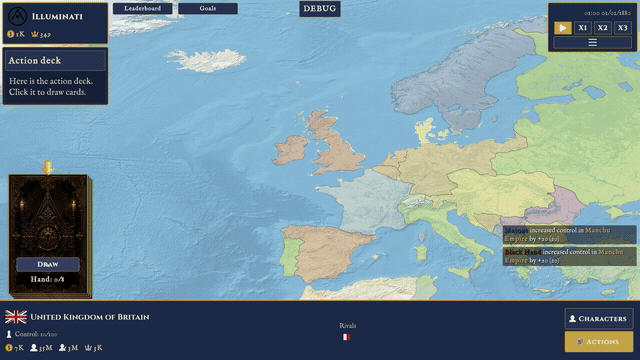

Choose your society
Lead the Masons, Illuminati, or Black Hand—not a nation—and expand outward from your organization’s headquarters.
SECRET-SOCIETY 4X · 1880
Lead the Masons, Illuminati, or Black Hand. Play action cards to sway characters, seize countries, sell arms, and wage war against rival organizations.
THE CAMPAIGN IN MOTION
Draw a hand, influence characters, change the diplomatic map, and watch wars unfold across multiple rounds. Select a neighboring scene or swipe to continue.

Draw action cards and turn them into resources, influence, and control.
HOW YOU PLAY
Begin from one country’s headquarters and build a network of influence across a mutable 1880 map. Every card changes the balance between countries, characters, and rival organizations.
Lead the Masons, Illuminati, or Black Hand—not a nation—and expand outward from your organization’s headquarters.
Spend action cards to gain control, sway a character’s opinion, sell arms, change rivalries, or declare war.
Wars unfold over multiple battle rounds, changing province ownership before the final terms are settled in a peace deal.
Build and break rivalries between countries while generals, diplomats, and advisors form opinions about your society.
Competing organizations act on their own and use the same card economy, costs, and strategic options available to you.
Track goals and organization score live, then compare your campaign against every rival on the end-game leaderboard.
BEHIND THE CAMPAIGN
Every feature moves through a structured, reviewable workflow: permanent specifications, architecture guardrails, autonomous implementation loops, and verification backed by real tools.
Explore the full workflow →Intent becomes acceptance criteria.
Architecture and implementation are reviewed.
Focused agents build in verified phases.
Builds, tests, and editor checks gate completion.
YOUR MOVE
Choose a society, establish your headquarters, and make your first move directly in the browser.